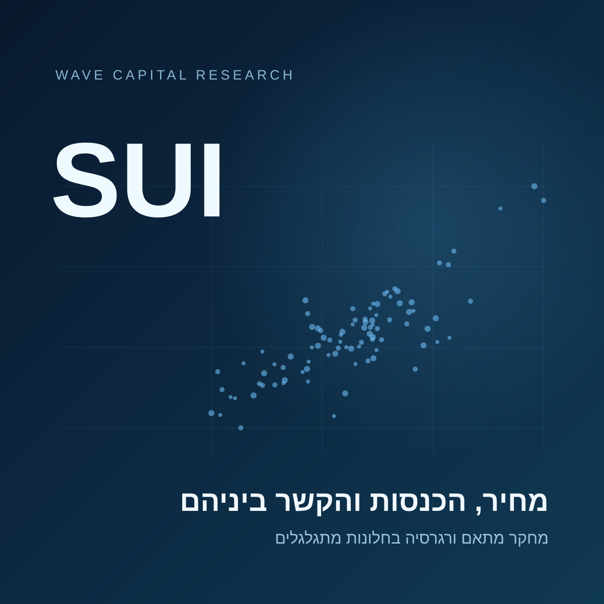

השוואת המתאם והשיפוע בין מחיר SUI לבין היחס בין שווי הרשת בדילול מלא להכנסות, בחלונות של 7, 30, 60 ו 90 ימים.
91 תצפיות יומיות · 5 באוגוסט עד 3 בנובמבר 2026

הסבר קצר לשותף
ניסינו לבדוק האם מחיר SUI קשור ליחס שבין שווי הרשת בדילול מלא להכנסות שלה, והאם עוצמת הקשר משתנה לפי אורך התקופה, התנודתיות וכיוון המחיר.
במדגם כולו נמצא מתאם שלילי של כ 0.50 ברמות, אבל לאחר הסרת מגמת הזמן הוא כמעט נעלם. בשינויים היומיים נמצא דווקא מתאם חיובי של כ 0.82. בבדיקות הראשוניות הקשר היומי נראה חזק יותר לאחר תנודתיות גבוהה או מגמת עלייה קודמת במחיר, אך המדגם קצר והפערים אינם חד משמעיים. המחיר עצמו עשוי להופיע בתוך היחס, ולכן אין כאן הוכחה שהכנסות גורמות לשינוי במחיר.
מתאם ושיפוע לאורך הזמן
האומדן האחרון שזמין בכל חלון נבחר
חלון
סיום
תצפיות מתאימות
מתאם
שיפוע
רווח סמך 95% לשיפוע
אילו משתנים עשויים לשנות את עוצמת הקשר
ארבע השוואות חקרניות על מלוא ההיסטוריה הזמינה. הטבלה מתעדכנת לפי הבחירה בין רמות לשינויים יומיים, ללא סינון המצבים של התרשים. כיוון ועוצמה מוצגים בנפרד: מתאם שלילי חזק עשוי להיות בעל ערך מוחלט גבוה.
הפרש בעוצמה הוא הערך המוחלט של המתאם בקבוצה הראשונה פחות הערך המוחלט בקבוצה השנייה. ערך חיובי מציין קשר חזק יותר בקבוצה הראשונה, בלי קשר לסימן המתאם.
רווחי הבדיקה מבוססים על דגימה חוזרת של רצפים מעגליים באורך 7 ימים, מתוך כל ימי המדגם, תוך שמירת התצפיות והתוויות יחד. בכל השוואה מבוצעות 3,000 דגימות ונפסלות דגימות עם פחות משמונה תצפיות באחת הקבוצות. רווח של 98.75% לכל השוואה נבחר כתיקון בונפרוני לארבע ההשוואות בכל סוג נתונים. הכיסוי בפועל משוער, במיוחד במדגם קצר וברמות שאינן יציבות.
כל רווחי הבדיקה כוללים אפס. לכן אין בבדיקה זו בסיס לבחור משתנה מנצח. ההשוואות אינן מוכיחות סיבתיות, ואינן מפרידות בין השפעות של משתנים חופפים כמו מגמה ותנודתיות. אין כאן אימות של יכולת חיזוי.
מקורות ושחזור
הניתוח מבוסס על שני קובצי המקור שסופקו: מחיר, ויחס שווי בדילול מלא להכנסות. יש 91 תאריכים תואמים, ללא תאריכים כפולים, ערכים חסרים או ימי לוח חסרים. לא בוצעו השלמות נתונים.
מטבע המחיר, מקור הנתונים, מועד הדגימה, הגדרת ההכנסות ואופן החישוב של היחס אינם מצוינים בקבצים. התצפית מ 3 בנובמבר עלולה לייצג יום חלקי. כל הנתונים ו 50 מצבי התרשימים מוטמעים בקובץ, והוא אינו צריך חיבור לרשת.
הקוד לחישובים נשמר בחבילת השחזור. הקובץ להורדה מתוך העמוד כולל את כל נקודות הזמן המתאימות לבחירה הנוכחית, לרבות רווחי סמך ומספר התצפיות. רווחי הבדיקה וההשוואות הם חקרניים ולא הבטחה לרמת כיסוי מדויקת.
הגדרות ומגבלות
הגדרת המצבים
תנודתיות קודמת: סטיית התקן של שבעת השינויים הלוגריתמיים במחיר עד היום הקודם. גבוהה פירושה מעל החציון המצטבר של מדדי התנודתיות שקדמו למדד הנוכחי, לאחר שנצברו לפחות 14 מדדים קודמים. לא משתמשים בחציון של כל התקופה כדי להגדיר את העבר.
כיוון קודם: שינוי לוגריתמי מצטבר במחיר או ביחס לאורך שבעה ימים, המסתיים ביום הקודם. מעל אפס מסווג כעלייה, ואפס ומטה כמצב ללא עלייה.
גודל תנועה קודמת: הערך המוחלט של שינוי המחיר הלוגריתמי ביום הקודם, לעומת החציון המצטבר של הגדלים שקדמו לו, לאחר לפחות 14 תצפיות.
לכל משתנה יש תקופת הכנה משלו, ולכן מספר התצפיות משתנה בין הבדיקות. פירוש המונח ״נפח״ כאן הוא תנודתיות בלבד. אין בקבצים נתוני מחזור מסחר, ולכן לא נבדקה השפעתם.
מה בדיוק מחושב
בכל חלון מחשבים מתאם פירסון ורגרסיה לינארית עם קבוע, כאשר המחיר הוא המשתנה המוסבר והיחס הוא המשתנה המסביר. ברמות, השיפוע מוצג ביחידות מחיר לכל 1,000 יחידות יחס. בשינויים יומיים הוא מוצג כשינוי לוגריתמי במחיר לכל יחידת שינוי לוגריתמי ביחס. יחידות השיפוע שונות, ולכן אין להשוות את גודלן בין שני סוגי הנתונים.
חלון של W ימים מכיל W תצפיות זוגיות. כדי לחשב W שינויים יומיים דרושות W ועוד אחת תצפיות מחיר מקוריות. חלונות חופפים תלויים זה בזה. הסינון משתמש באותו טווח ימים, בלי להאריך את החלון כדי לאסוף עוד תצפיות.
מתאם שלילי ברמות אינו יציב: לאחר הסרת מגמה לינארית מתקבל מתאם של מינוס 0.036. בדיקת קו אינטגרציה אינה מוצאת עדות לקשר שיווי משקל במדגם, אך המדגם קצר. תיקון HAC אינו פותר חוסר יציבות של רמות.
אם שווי בדילול מלא מחושב כמחיר כפול היצע, המחיר כבר מופיע ביחס. לכן אי אפשר לייחס את הקשר להכנסות בלבד.
מגבלת המדגם: חלון של 90 תצפיות נותן רק שתי נקודות ברמות ונקודה אחת בשינויים יומיים. בחלונות של 7 ימים, ובמיוחד לאחר סינון, האומדנים עלולים להיות לא יציבים. שלושה חודשים קלנדריים מלאים אינם זמינים.
התנאים נקבעים לפי מידע שזמין עד היום הקודם. אורך החלון נשאר קבוע בימים, ורק התצפיות המתאימות בתוך החלון משתתפות בחישוב.
רווח הסמך מוצג כשטח מוצל כשנבחר חלון יחיד. הוא מותאם לשונות ולתלות סדרתית בשיטת HAC, עד 7 ימי פיגור או פחות בחלון קצר. בחלונות מסוננים נשמר המרחק הקלנדרי בין התצפיות. רווחים בתרשים מייצגים פחות מארבע תצפיות מתאימות, ולא מתאם אפס.